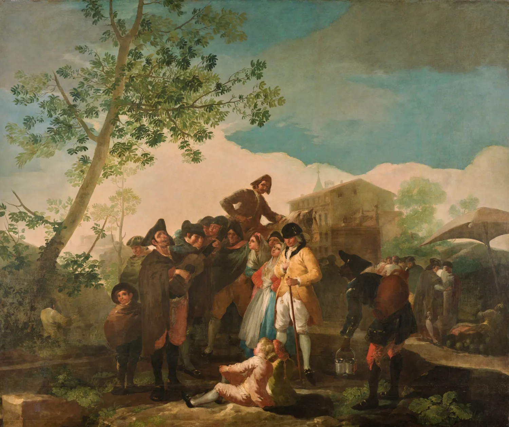

Goya to Cornelio Vandergoten · 26 October 1778
Letters from Goya · Chapter I Madrid and the Cartoons · Madrid

Listen to the first sentence (Spanish)
The letter and its translation
Sr. D. Cornelio Vandergoten: De orden del señor don Francisco Sabatini se servirá vuestra merced de entregarme el cuadro pintado por mi mano que representa El ciego tocando la guitarra y varias gentes oyéndole, para el fin que vuestra merced sabe.
Señor Don Cornelio Vandergoten: By order of Señor Don Francisco Sabatini, please be so good as to hand over to me the picture painted by my hand that shows The Blind Man Playing the Guitar and various people listening to him, for the purpose you know of.
Quedo de vuestra merced su servidor.
I remain your servant.
Selected sentences from the letter. The translation is our own.
This is not a letter to a friend but a short request to Cornelio Vandergoten, director of the Royal Tapestry Factory. On the orders of the court architect Francisco Sabatini, Goya asks for his own cartoon ‘The Blind Guitarist’ to be handed back to him; the note does not say what ‘the purpose you know of’ was. Cruzada Villaamil printed it in ‘Los tapices de Goya’ (1870). ‘Vmd.’ abbreviates ‘vuestra merced’, the old form behind today's usted.
In the app the letter arrives line by line like a message, with the meaning under each word, and you can talk with the writer. Chapter I is free.
Keep reading in the app · Google Play
Credits
- Picture: Francisco de Goya · El ciego de la guitarra · 1778 · Museo del Prado, Madrid · Public domain (PD-Art) · source
- Letter text: Cruzada Villaamil 1870, p. 122 · G. Cruzada Villaamil, Los tapices de Goya (Madrid, 1870), p. 122 · public domain · archive.org
- Narration: made with Supertonic 3 (Supertone Inc.), model licence OpenRAIL-M.
- All sources: Lingua Museum sources and licences